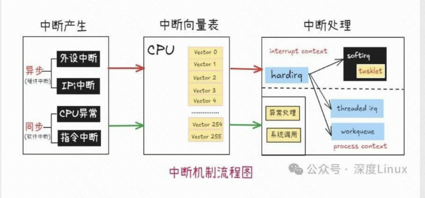
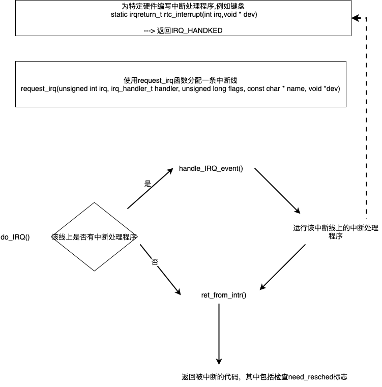

概述
- 本篇文档总结和梳理硬中断
- 时钟中断(0 号中断)
- 缺页中断
操作系统的本质
- 整个操作系统就是一个中断驱动的死循环，操作系统原理如果用一行代码解释，下面这样再合适不过了。
while(true) {
doNothing();
}
其他所有事情都是由操作系统提前注册的中断机制和其对应的中断处理函数完成，我们点击一下鼠标，敲击一下键盘，执行一个程序，都是用中断的方式来通知操作系统帮我们处理这些事件，当没有任何需要操作系统处理的事件时，它就乖乖停在死循环里不出来。
中断的分类
- 中断可以分为中断和异常, 异常又可以分为故障、陷阱、中止.

CPU 提供了两种中断程序执行的机制，中断和异常。第一个中断是个动词，第二个中断才是真正的机制种类。
- An interrupt is an asynchronous event that is typically triggered by an I/O device.
- 先说第一个机制中断（interrupt），中断是一个异步事件，通常由 IO 设备触发。比如点击一下鼠标、敲击一下键盘等。
-
An exception is a synchronous event that is generated when the processor detects one or more predefined conditions while executing an instruction.
-
再说第二个机制异常（exception），异常是一个同步事件，是 CPU 在执行指令时检测到的反常条件。比如除法异常、错误指令异常，缺页异常等。
-
这两个机制，殊途同归，都是让 CPU 收到一个中断号，至于 CPU 收到这个中断号之后干嘛，我们暂且不管。

中断信号传递到 CPU 的 3 种方式.

- 中断(interrupt), 是通过可编程中断控制器发送给 CPU 的. 比如按下键盘的一个按键，最终会给到 CPU 一个 0x21 中断号.
- 异常(exception), 是 CPU 自己给自己发的信号. 比如 CPU 执行到了一个无效的指令，则自己给自己一个中断号 0x06，这个中断号是 Intel 的 CPU 提前就规定好写死了的硬布线逻辑
- int 指令(比如大名鼎鼎的 int 0x80 指令)
再往后，CPU 以各种不同的方式收到的这些 0x21 0x06 0x80，都会一视同仁，做同样的后续处理流程，所以从现在开始，前面的事情就不用再管了，这也体现了分层的好处。
如何处理中断信号
-
先用一句不太准确的话总结，CPU 收到一个中断号 n 后，会去
中断向量表中寻找第 n 个中断描述符，从中断描述符中找到中断处理程序的地址，然后跳过去执行。 -
不太准确的图: 
什么是中断向量表
中断向量表就是中断描述符表. 是一个数组.
就是一个在内存中的数组而已，操作系统初始化过程中，有很多结构都称之为 XXX 表，其实就是个数组罢了。 以 linux-2.6.0 源码为例，就很直观了。
struct desc_struct idt_table[256] = { {0, 0}, };
你看，是一个大小为 256 的数组。idt_table 这个名字就是 Interrupt Descriptor Table，逐字翻译过来确实就是中断描述符表.
中断向量表里，存放的就是中断描述符, 里面就存有中断处理程序的地址. 细节就不展开了.
Linux 如何往中断描述符表里添加条目
在 Linux-2.6.0 内核源码的 traps.c 文件中，有这样一段代码。
void __init trap_init(void) {
set_trap_gate(0, ÷_error);
...
set_trap_gate(6, &invalid_op);
...
set_intr_gate(14, &page_fault);
...
set_system_gate(0x80, &system_call);
}
你看，我们刚刚提到的除法异常、非法指令异常、缺页异常，以及之后可能通过 INT 0x80 触发系统调用的中断处理函数 system_call，就是这样被写到了中断描述符表里。
CPU 如何找到中断向量表
- 中断描述符表存储在内存里.
- CPU 提前预留了一个寄存器叫
IDTR 寄存器，这里面存放的就是中断描述符表的起始地址，以及中断描述符表的大小. - 操作系统的代码可以通过
LIDT 指令，将中断描述符表的地址放在这个寄存器里.
硬中断、软中断的区别
-
什么是硬中断?
-
是 Intel CPU 这个硬件实现的中断机制，注意这里是实现机制，并不是触发机制，因为触发可以通过外部硬件，也可以通过软件的 INT 指令.
-
什么是软中断?
- 软中断是纯粹由软件实现的一种类似中断的机制，实际上它就是模仿硬件，在内存中有一个地方存储着软中断的标志位，然后由内核的一个线程不断轮询这些标志位，如果有哪个标志位有效，则再去另一个地方寻找这个软中断对应的中断处理程序。
为什么调度器能够一直运行
- 时钟中断
时钟中断
- Linux 的 0 号中断是一个定时器中断。在固定的时间间隔都发生一次中断，也是说每秒发生该中断的频率都是固定的。该频率是常量 HZ，该值一般是在 100 ~ 1000 之间 , 也就是每 ms 一次或者每 10ms 一次. 时钟中断的周期，我们叫做
滴答（tick）. - 该中断的作用
- 定时更新系统日期和时间，使系统时间不断地得到跳转。
- 需要更新本地 CPU 统计数, 调用 scheduler_tick 递减进程的时间片，若进程的时间片递减到 0，进程则被调度出去而放弃 CPU 使用权。
如何实现时钟中断
- 可编程定时/计数器(8259A)产生的输出脉冲，这个脉冲送入 CPU，就可以引发一个中断请求信号，我们就把它叫做时钟中断。
- 时钟中断是特别重要的一个中断，因为整个操作系统的活动都受到它的激励。系统利用时钟中断维持系统时间、促使环境的切换，以保证所有进程共享 CPU；利用时钟中断进行记帐、监督系统工作以及确定未来的调度优先级等工作。可以说，“时钟中断”是整个操作系统的脉搏。
简单一些图:

计算机中有一个设备，叫定时器，准确说叫可编程定时/计数器。 这个定时器每隔一段时间就会向 CPU 发起一个中断信号。 发起的中断叫时钟中断，其中断向量号被设置为了 0x20.
Linux 提前设置好了中断向量表。 schedule.c
set_intr_gate(0x20, &timer_interrupt);
这样，当时钟中断，也就是 0x20 号中断来临时，CPU 会查找中断向量表中 0x20 处的函数地址，这个函数地址即中断处理函数，并跳转过去执行. 这个中断处理函数就是 timer_interrupt，是用汇编语言写的。
system_call.s
_timer_interrupt:
...
// 增加系统滴答数
incl _jiffies
...
// 调用函数 do_timer
call _do_timer
...
这个函数做了两件事，一个是将系统滴答数这个变量 jiffies 加一，一个是调用了另一个函数 do_timer。do_timer 函数里面, 就会进行一些统计工作、并且运行周期性调度器. 这就是为什么调度器能够一直运行的原因.
复杂一些的原理图


多核 CPU 情况下的时钟中断
- 在单处理器系统中，每个 tick 只发生一次时钟中断。在对应的中断处理程序中完成更新系统时间、统计、定时器、等全部功能；
-
而在多处理器系统下，时钟中断实际上是分成两个部分：
-
1、全局时钟中断，系统中每个 tick 只发生一次。对应的中断处理程序用于更新系统时间和统计系统负载；
-
2、本地时钟中断，系统中每个 tick 在每个 CPU 上发生一次。对应的中断处理程序用于统计对应 CPU 和运行于该 CPU 上的进程的时间，以及触发对应 CPU 上的定时器；
-
于是，在多处理器系统下，每个 tick，每个 CPU 要处理一次本地时钟中断；另外，其中一个 CPU 还要处理一次全局时钟中断。
缺页中断
-
页缺失（英语：Page fault，又名硬错误、硬中断、分页错误、寻页缺失、缺页中断、页故障等）指的是当软件试图访问已映射在虚拟地址空间中，但是并未被加载在物理内存中的一个分页(struct page)时，由中央处理器的
内存管理单元(MMU)所发出的中断. -
如何观察缺页中断的次数
- 用
ps -o majflt,minflt -C program命令查看。 majflt代表major fault,中文名叫大错误;minflt代表minor fault,中文名叫小错误。- 这两个数值表示一个进程自启动以来所发生的缺页中断的次数。
- 当一个进程发生缺页中断的时候，进程会陷入内核态，执行以下操作：
- 1、检查要访问的虚拟地址是否合法
- 2、查找/分配一个物理页
- 3、填充物理页内容（读取磁盘，或者直接置 0，或者啥也不干）
- 4、建立映射关系（虚拟地址到物理地址）
- 5、重新执行发生缺页中断的那条指令
- 如果第 3 步，需要读取磁盘，那么这次缺页中断就是
majflt，否则就是minflt.
中断的上半部和下半部
-
上半部 是 在某一个 IRQ 号完全禁止的情况下运行的
-
- 1 比如键盘中断，所有 CPU 核上都被禁止了，在某一个 CPU 上运行该中断处理程序。
-
- 2 中断不会丢，中断信号由硬件发起，传输到中断控制器（8295A），由中断控制器传给 CPU
（当然别的中断号，例如网卡中断，可以打断键盘中断处理程序）
上半部核心是do_irq()函数,每次调用do_irq()函数时，传入了 CPU 当前寄存器的状态.unsigned do_IRQ(struct pt_regs regs)
